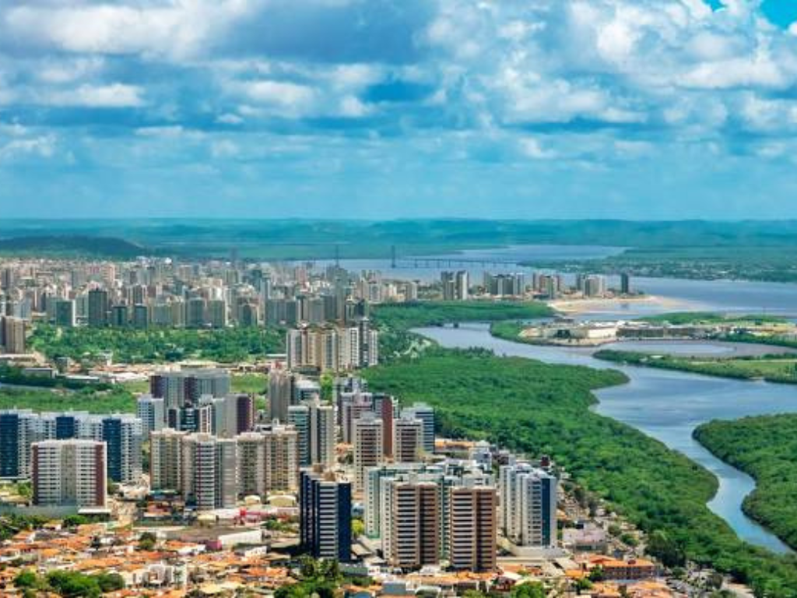

Sergipe é o menor estado do Brasil em extensão territorial, localizado na região Nordeste, mas se destaca por sua rica cultura, belas paisagens e importância histórica. Sua capital, Aracaju, é conhecida pela qualidade de vida, praias urbanizadas e infraestrutura turística acolhedora. Sergipe possui importantes atrações naturais, como o Cânion do Xingó, um dos destinos turísticos mais impressionantes da região, além de tradições culturais marcadas pelo forró, artesanato e culinária típica nordestina. A economia sergipana é baseada no turismo, agricultura, pecuária, indústria e produção de petróleo e gás natural, contribuindo para o desenvolvimento econômico do estado.

Voltar